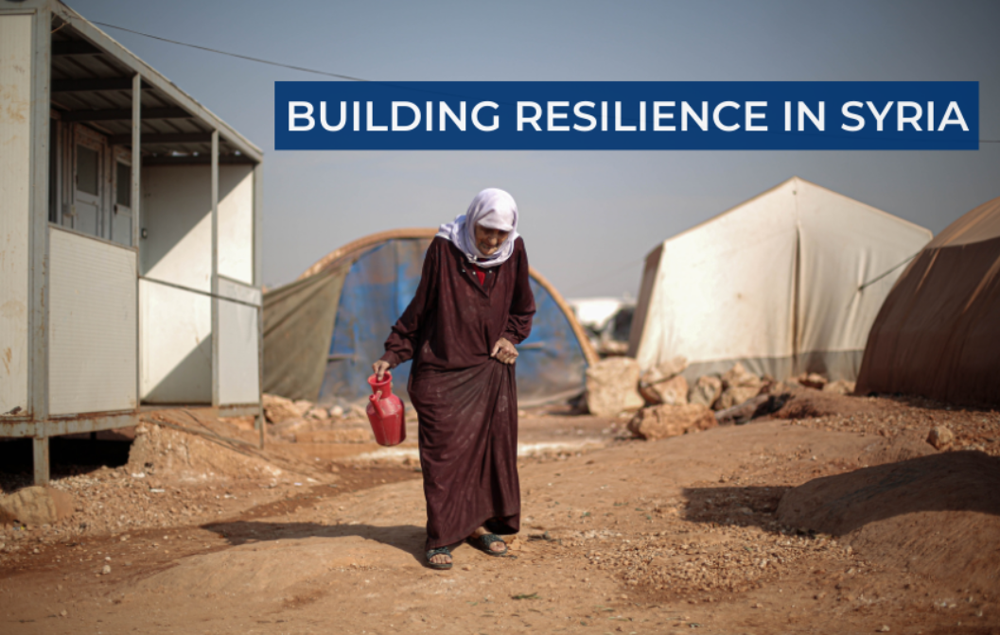

INTERNATIONAL SECURITY AND DEVELOPMENT CENTER (ISDC)
Building Local Resilience in Syria (BLRS) – Data Analysis and Visualisation
Analysis and visualisation of large-scale household panel data for an RCT-based impact evaluation of a resilience programme in Syria.

Supporting evidence generation for resilience programming in conflict-affected Syria, through quantitative data preparation, food-security analysis and public-facing research outputs.
Research context
The Building Local Resilience in Syria (BLRS) programme involved multiple implementing partners and an RCT-based impact evaluation. Research examined resilience and food security in a fragile, conflict-affected setting.
Analytical workflow and tangible outputs
At ISDC, I supported the research and evidence-generation activities of the FCDO-funded Building Local Resilience in Syria impact evaluation. My work included harmonizing and validating multi-partner household survey data, constructing food-security measures and producing accessible analytical outputs for programme and research audiences.
From evidence to communication
The thematic brief translates survey indicators into an accessible discussion of food-security conditions. The interactive programme map complements the analysis by making geographic programme information explorable for a wider audience.
My contribution
- Cleaned, merged and harmonized more than 80,000 household observations from multi-partner panel survey data using R and Excel, standardizing variables and checking consistency across implementing partners.
- Constructed household food-security indicators, including FIES and FCS, and conducted descriptive analysis and visualizations in R.
- Contributed to the programme Theory of Change design and indicator framework, connecting measurement and research requirements with programme activities.
- Co-authored a public thematic brief on food security and developed research communication products, including an internal R Shiny application, interactive HTML map and analytical figures.
- Worked with researchers and implementing partners to clarify data requirements and resolve data inconsistencies.
Research outputs
The food-security brief synthesizes survey-based evidence for programme and policy audiences. The interactive map communicates the geographic distribution of BLRS activities. Both are public ISDC outputs; internal source data and co-developed analytical applications are not shared here.
Methods & research skills
Scope & attribution
This is a collaborative institutional research project. The outputs linked below belong to ISDC and its project partners; my contributions are described separately from the work of the wider research team.
Explore the project
Institutional research data and nonpublic analytical code are not shared. External research outputs remain the property of their respective authors and organizations.